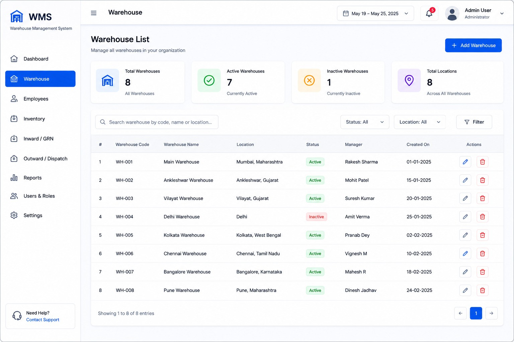

MODULE 03 • WAREHOUSE
Warehouse Management
Organize warehouse, locations and operational information in a structured WMS experience.
Back to WMS
Organize warehouse, locations and operational information in a structured WMS experience.
Back to WMS
Keep warehouse information organized and easy to understand.
Support structured location and storage information.
Connect warehouse activity with inventory operations.